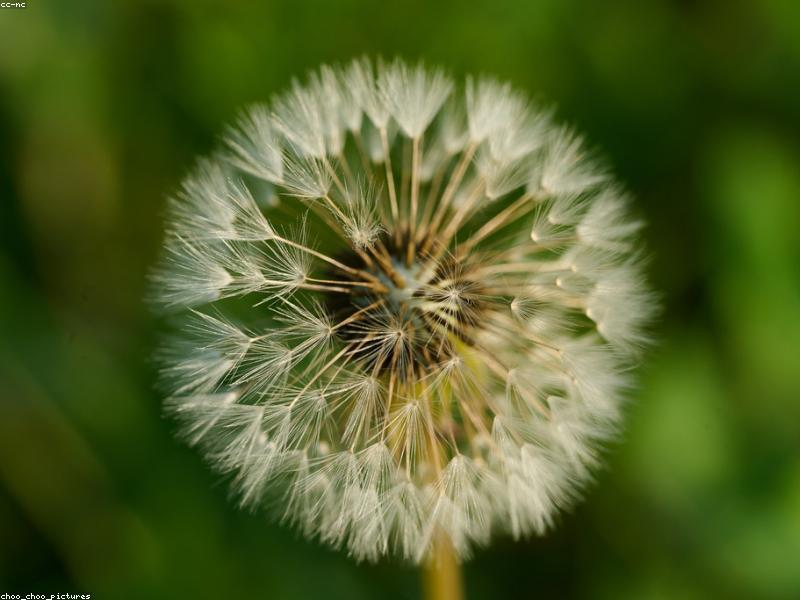

Seeds & Selection
The foundation of every great harvest. Learn to select high-yield, disease-resistant varieties for your climate.
Read Guide →Empowering new farmers with science-backed knowledge. From selecting the perfect seed to harvesting a bountiful organic crop, we guide you every step of the way.

Comprehensive guides designed for modern agricultural success.
The foundation of every great harvest. Learn to select high-yield, disease-resistant varieties for your climate.
Read Guide →Unlock the secrets of NPK. Understand soil health and how to apply fertilizers for maximum uptake.
Read Guide →Integrated pest management strategies. Protect your yield from pests and diseases responsibly.
Read Guide →Daily care routines, irrigation techniques, and monitoring for peak plant health.
Read Guide →Chemical-free farming. Master composting, natural pest control, and certification standards.
Read Guide →Calculators, charts, and downloadable PDFs to assist your daily decision making.
Read Guide →Watch our featured guide on sustainable agriculture practices. Learn how to maintain soil health and increase biodiversity on your farm.
Watch on YouTubeAgriculture is evolving. Today's farmers need more than just tradition—they need precision, sustainability, and science.
Our mission is to bridge the gap between complex agricultural science and practical, on-the-ground application. Whether you are managing a backyard plot or 10 acres, we provide the clarity you need to grow better.
Get in Touch